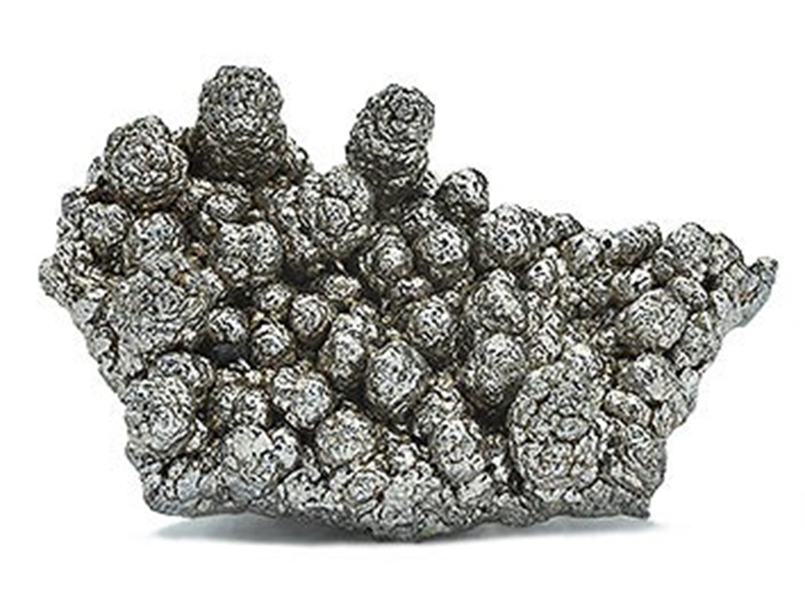

Mangan
Mangan ist ein chemisches Elemente Mn mit der Ordnungszahl 25 und ein Übergangsmetall.

| Eigenschaft | Wert |
|---|---|
| Dichte $[kg/m^3]$ | $7470$ |
| Schmelztempertur $[°C]$ | $1244$ |
| E Modul $[N/m^2]$ | $1.9\cdot 10^{10}$ |
| Zugfestigkeit $[N/m^2]$ | $8-10\cdot 10^{8}$ |
| $R_{0.2}$ | $3.5\cdot 10^{8}$ |
| Querkontraktion $[-]$ | $ 0.24$ |
| Wärmeausdehnungskoeffizient$[1/K]$ | $23$ |
| Wärmeleitfähigkeit $[W/(m \cdot K)]$ | $7.82$ |
| spezifische Wärmekapazität $[J/(kg \cdot K)]$ | $480$ |
| elektrische Leitfähigkeit $[S/m]$ | $0.695 \cdot 10^6$ |
Tritt in $\alpha$ Mangan als kubisch raumzentriert und $\beta$ Mangan als kubisch primitiv auf.
Vorkommen
Mangan ist das dritthäufigste Übergangsmetall (unvollständige Elektronenbesetzung auf d-Schale) [5] der auf der Erde (nach Eisen und Titan). In der Erdkruste kommt es mit einem Gehalt von 0.095%. Dabei kommt es nicht elementar, sondern stets in Verbindungen vor. Neben Mangansilikaten und Mangancarbonat ist es vor allem in Oxiden gebunden. Häufige Minerale sind die Mineralgruppe der Braunsteine, Manganit, Hausmannit, Braunit, Rhodochrosit und Rhodonit. [6]
Verwendung
Mangan ist sehr spröde. Man kann es im Vergleich zu anderen Metallen leicht pulverisieren. [6] Erst bei Temperaturen über 1600 °C entsteht reines Mangan, bei dieser Temperatur verdampft jedoch schon ein Teil des Mangans, so dass dieser Weg nicht wirtschaftlich ist. Die Alkali-Mangan-Batterie beziehungsweise Alkali-Mangan-Zelle ist ein galvanisches Element und zählt zu den wichtigsten elektrochemischen Energiespeichern. Aufgrund höherer Kapazität, besserer Belastbarkeit und längerer Lagerfähigkeit hat sie die Zink-Kohle-Batterie aus vielen Anwendungen verdrängt. negativen Elektrode: Zink positiven Elektrode: Braunstein Elektrolyt: konzentrierte Kalilauge [8] Für einen Großteil der Anwendungen wird kein reines Mangan benötigt. Stattdessen wird Ferromangan, eine Eisen-Mangan-Legierung mit 78 % Mangan, gewonnen. Ferromangan wird hauptsächlich als Legierungszusatz zur Herstellung anderer Eisenlegierungen, als Desoxidationsmittel und zur Rückkohlung von Eisenschmelzen verwendet. Spiegeleisen noch ein Ferromanganlegierung die aus etwa 6 bis 40 % Mangan, 4 bis 5 % Kohlenstoff, bis 1 % Silicium sowie geringe Mengen an Phosphor und Schwefel enthält. Eine weitere Legierung, die auf diesem Weg hergestellt wird, ist die Mangan-Eisen-Silicium-Legierung Silicomangan. Sie wird als Desoxidationsmittel und Legierungsmittel in der Stahlindustrie genutzt. Die Legierung Manganin (83 % Kupfer, 12 % Mangan und 5 % Nickel) besitzt, einen niedrigen elektrischen Temperaturkoeffizienten, d. h. der elektrische Widerstand ist nur wenig von der Temperatur abhängig. Diese Materialien werden daher vielfach in elektrischen Messgeräten verwendet. [6]
Mangan im Körper Es ist aber auch ein essenzielles Spurenelement und Mineralstoff für uns und alle anderen Lebewesen. Als Bestandteil von bestimmten Enzymen trägt es dazu bei, einen normalen Energiestoffwechsel zu gewährleisten und ist wichtig für den Knochenbau und die Bindegewebsbildung. Außerdem trägt es dazu bei, unsere Körperzellen vor oxidativem Stress zu schützen. Mangan in größeren Mengen giftig sein. [7]
Referenzen
| Nummer | Quelle |
|---|---|
| [1] | https://www.chemie.de/lexikon/Mangan.html |
| [2] | https://www.chemie.de/lexikon/Aluminium.html |
| [3] | https://www.chemie.de/lexikon/Kupfer.html |
| [4] | https://www.chemie.de/lexikon/Eisen.html |
| [5] | https://flexikon.doccheck.com/de/%C3%9Cbergangsmetall#:~:text=1.-,Definition,%2DSchale%20(Elektronenkonfiguration)%20charakterisiert |
| [6] | https://institut-seltene-erden.de/seltene-erden-und-metalle/ |
| [7] | https://www.pascoe.de/wirkstoffe/inhaltsstoffe/mangan.html |
| [8] | https://www.chemie.de/lexikon/Alkali-Mangan-Batterie.html |
| [9] | https://www.teamedelstahl.de/werkstoffe/1-3401/ |
| [10] | https://www.ke-ag.de/wp-content/uploads/2017/11/Werkstofftabelle_GJL.pdf |